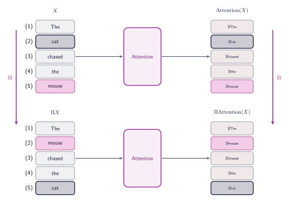
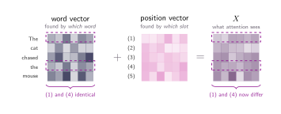
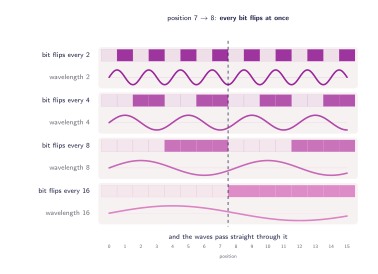
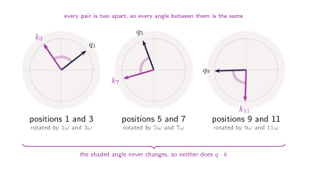

09 · Queries, Keys, and Values
Positional Information
Attention and a sentence scramble
Imagine feeding our model a slightly different sentence. Instead of The cat chased the mouse, we give it The mouse chased the cat. If we run this new sequence through the attention mechanism we just built, something intriguing happens. Because the weight matrices $W_Q$, $W_K$, and $W_V$ act on each word independently, the same words generate the exact same queries, keys, and values. The dot products and softmax weights move with them, and every word walks away holding the exact same contextual vector it did in the first sentence, just sitting in a different row. Whatever the model understands about this sentence, it has no idea who actually did the chasing (cat or mouse).
If we pay attention to the numbers we have been showing, they have been quietly breaking it for several sections. Back in section 06 we said that the is fetched twice from the embedding table and that both copies come back identical. If that is true, then both occurrences hand over the very same key, and the query belonging to word (3) chased has no choice but to score them equally. Yet every figure since section 05 gives the first the a weight of 0.04 and the second one 0.06. Both of those things cannot be true at the same time.
Let's visualise this more formally. Let $\Pi$ be a permutation matrix, so that $\Pi X$ is our sentence with its rows shuffled. Because the projections are row-wise, shuffling the input shuffles all three of them in exactly the same way:
The scores follow from those three. Transposing the second factor sends its permutation to the other side, so the score matrix comes out with a $\Pi$ on the left and a $\Pi^{\top}$ on the right:
Next, consider the softmax function, which operates independently across each row. The $\Pi$ on the left permutes whole rows, and the $\Pi^{\top}$ on the right permutes individual entries within those rows. Because neither operation alters the actual set of values contained within any given row, the softmax function commutes with both permutations:
The final step involves blending the values. At this stage, the transposed permutation matrix $\Pi^\top$ that has been carried through the equation multiplies the permutation matrix $\Pi$ associated with the transformed values $V' = \Pi V$. Because multiplying a permutation matrix by its transpose yields the identity matrix $\Pi^\top \Pi = I$ these two terms mathematically cancel one another:
If we use $\operatorname{Attention}(X)$ to represent the entire self-attention process applied to matrix $X$, we can summarise all four steps in a single equation:
This means that if we shuffle the input sentence, the final output is simply the original output shuffled in the exact same way. This property is called permutation equivariance. It highlights a major problem in which the model does not inherently understand word order. The only part of the architecture that treats positions differently at all is the mask discussed in the previous section. Yet, that mask controls which words the model is allowed to look at, but it still fails to tell the model exactly where those readable words are located in the sequence.

Where order has to come from
Nothing is wrong with the mechanism itself. Attention does exactly what we built it to do, comparing every row of $X$ against every other one and blending the values accordingly. The trouble is what $X$ contains. Row $i$ holds the embedding of the word sitting at position $i$ and nothing else, so two copies of the same word produce two identical rows, and no amount of arithmetic downstream can tell them apart. The solution to this cannot live inside the dot product or the softmax either, because both of them only ever see the rows they are handed. If two rows go in identical, they come out identical. The information has to arrive with the input, which means the vectors themselves must already differ depending on where they sit.
The most direct way to arrange that is to write the position into the vector. Give every embedding one extra coordinate and store the index in it, so the word at position (1) carries a 1, the word at position (2) carries a 2, and our two copies of the at (1) and (4) finally differ by 3. It costs a single dimension, it needs no training, and it makes every row in the sentence unique, which is precisely what we just said we needed.
This idea doesn't work at scale. Back in section 04 we worked out that a score is a sum of $d_k$ products with a spread of about $\sqrt{d_k}$, so a 64-dimensional model produces content scores somewhere around $\pm 8$. However, our added position coordinate does not follow this strict budget. A word at position 500 introduces a massive term of order 500 into the dot product, which overwhelms the other 64 dimensions. While the softmax function relies exclusively on relative gaps rather than absolute values, this positional addition is not uniform. Because it increases linearly with the key's position, the softmax weights collapse toward whichever end of the sentence has the highest numbers, thus ignoring what the words themselves actually mean.
The obvious repair is to keep the coordinate and shrink it. Divide the index by the length of the sentence so that it always lands between 0 and 1, and the problem of scale disappears. But don't get too excited yet! Something else will also break this logic. In our five-word sentence, the third word sits at 0.6, but in a hundred-word paragraph, the third word sits at 0.03. The exact same absolute position results in a completely different number depending on how long the sentence is. The step size between words changes too, dropping from 0.2 in the short sentence to just 0.01 in the long one. A rule as ordinary as look at the previous word has no fixed numerical form for the model to learn, because that form changes with every sentence it is shown.
Every scheme we have tried, and their respective problems:
-
Store the raw index. One extra coordinate holding 1, 2, 3,
and so on down the sentence.
- Problem: it obeys no budget. At position 500 it contributes a term of order 500 against content scores of $\pm 8$, so the weights rank by position and stop reading the words.
-
Normalise the index. Divide by the length of the sentence
so the coordinate always lands between 0 and 1.
- Problem: the same position, and the same step between words, is a different number in every sentence, so no fixed rule about distance is ever learnable.
-
Multiply instead of add. Scaling the embedding by the
position.
- Problem: it changes the length of the word's vector, so mouse at position 50 is fifty times louder than mouse at position 1. The score then measures volume rather than meaning.
-
One-hot the position. Appending an indicator of length $n$.
- Problem: it makes every position distinct and does nothing else. Two neighbouring positions sit exactly as far apart as two distant ones, the width of the model now depends on the length of the sentence, and a position past $n$ has no column at all.
One vector per position
An idea: stop trying to describe a position with a number. Every position gets a vector of its own, $d_{\text{model}}$ numbers wide, exactly as wide as the embedding it is going to join, and we add the two together. Word (3) chased now arrives as its own embedding plus the vector belonging to position 3, and our two copies of the word finally differ, because the vector for position (1) is not the vector for position (4).
A vector buys what a single coordinate could not. Spread across $d_{\text{model}}$ numbers, a position becomes a pattern rather than a magnitude, so two positions are free to agree in some coordinates and differ in others. And the notion of distance starts to get more meaning, nothing forces the pattern to grow as we move along the sentence. It can stay small enough to colour a score rather than decide it.
That leaves the question of what those vectors hold, and the simplest answer is "let it fly!". Alright, that wasn't clear. We should build a table with one row per position, of shape $n_{\text{max}} \times d_{\text{model}}$, fill it with random numbers and let training sort it out, exactly as we did for the words themselves in section 06. Building $X$ becomes two lookups instead of one: each word fetches its row from the embedding table, each slot fetches its row from the position table, and the two are added.

This setup actually works great, and plenty of big models use exactly this trick. The catch is that we are completely locked into the table's size. We have to pick the maximum length, $n_{\text{max}}$, before the training start, and the model won't build a single row beyond that limit. So, a model built for 1024 words doesn't just do a bad job on word 1025 it simply crashes because there is absolutely nothing there to look up. On top of that, the rows at the very end barely get any practice since super long sentences don't show up very often. Since they are totally separate variables, the model has to figure out that they are next-door neighbors completely from scratch, learning that relationship one pair at a time.
Context length
That $n_{\text{max}}$ variable is actually a number you've probably seen a ton of times if you follow AI news. When you hear that a model has a "context window" of 1,024 tokens, or 8,192, or a million, that is exactly what $n_{\text{max}}$ is. It's the hard limit on the longest sequence the model can actually read at one time!
Computing the vectors instead of storing them
Both of those issues come from the same place, storing the positional vectors in a static lookup table. By definition, a table possesses a finite capacity, and its independently initialized rows lack any intrinsic relationship. The solution we would like therefore is to eliminate storage entirely. If the vector for a given position $p$ is instead computed dynamically via some function, that capacity constraints would vanish, as there would be no row to exhaust. Even better, the relationship between neighbouring positions (like 3 and 4) would be inherently encoded within the function itseld, eliminating the problem above of the model to learn proximity during training.
One option is binary encoding: write the position in base 2 and map its bits to the vector coordinates (e.g., position 1 is $001$, 2 is $010$). Because each coordinate is strictly 0 or 1, it never overwhelms the semantic content, yet guarantees a unique pattern for every position. The bits alternate at increasing frequencies for example every step, every two steps, every four. This scaling is highly efficient: $d$ coordinates can encode $2^d$ positions, whereas a standard table of the same width only holds $d$.
The problem is that this discrete pattern lacks gradients. And we have already seen that we should not make our gradients harder (section 02)! Jumping strictly between 0 and 1 leaves no smooth slope for the model to learn from. Furthermore, the mathematical distances are erratic. For example, adjacent positions 7 ($0111$) and 8 ($1000$) differ in every single coordinate, while positions 0 ($0000$) and 8 ($1000$) differ by only one bit despite being eight steps apart. Ultimately, physical nearness in the sentence and mathematical nearness in the encoding become completely disconnected.
Before discarding the binary idea entirely, notice what worked: coordinates changing at different rates, from fast to slow. This underlying structure is exactly what we need. The only flaw is the abrupt jumping. A flipping bit is just a square wave, which is essentially a continuous wave forced into sharp corners. By replacing each bit with a smooth wave of the same wavelength, the coordinate now glides seamlessly between $-1$ and $1$ across the sentence instead of snapping between two integers. Every property we liked survives, and the erratic jumping disappears.

Sinusoidal Positional Encoding (PE)
To formalize this approach, we group the coordinates of the positional vector into pairs. Each pair, indexed by $j$, consists of a sine function and a cosine function that oscillate at an identical frequency:
where
In these equations, $p$ represents the absolute position within the sequence. The index $j$ iterates from $0$ up to $d_{\text{model}}/2 - 1$, ensuring the pairs populate the entire dimensionality of the vector. The term $\omega_j$ dictates the specific angular frequency (the rate of turning) for pair $j$. Crucially, this mechanism contains no trainable parameters. It is a deterministic function, meaning that an input at any position (whether 5 or 5,000,000) its corresponding positional vector is dynamically computed.
Context length, revisited
If the formula answers for any position at all, then the wall we met a few paragraphs ago is gone. There is no $n_{\text{max}}$ here, no last row to run out of. So why does LLMs have a context length?
Because two other walls were standing behind that one. The first is training: a model has only ever seen sequences up to a certain length, and the attention patterns it learned there do not survive far outside that range. The encoding is perfectly well defined at position 5,000,000, but the model has never once been asked to read anything of the sort. The second is cost. Attention compares every position with every other, so the work grows with the square of the length, which is what section 11 is about.
This is also why so much recent work on long context is about stretching a trained model's positions to cover a wider window, rather than about inventing a new encoding.
Encoding Relative Distance
We already analysed why the previous positional schemes failed, and in all those setups the model had no way to ask for something like the word three places back. This is a fatal flaw because relative distance is crucial for languages. Like finding the adjective right before a noun, or the subject tied to a specific verb. So the real test for the sine waves isn't just that they stay within numerical bounds or handle infinitely long texts. The main interest now is whether it supports relative attention, enabling the model to explicitly express a relational target like look three positions to my left.
For example, if a query at position 10 needs to look back at a target word at position 7, the distance between that specific pair of interacting words needs to hold true wherever they happen to be. Whether the query and target sit at 10 and 7, or at 40 and 37. Therefore, the model does not need to learn a specific fact about position 10. Instead, it needs a consistent operation that can shift any given query position exactly three spaces backward to find its target, working the exact same way everywhere in the sentence. If the architecture provides that consistent operation, the model can learn the relationship once and confidently apply it anywhere.
That operation exists, and it is the exact reason the formula pairs sines and cosines together. Take a single pair turning at frequency $\omega_j$, and look at what happens when we shift the position from $p$ to $p + k$:
Look closely at that matrix: every single piece of it is built using only the jump distance $k$. The starting spot $p$ is not present at all at the matrix. Moving three steps over is the exact same little rotation whether you start at word 7, 37, or 3997. To shift the whole positional vector, you just rotate every pair by its own angle $\omega_j \, k$. So, look three to my left actually translates perfectly into math: it's a fixed linear map that works the exact same way no matter where you are in the sentence.
Aside: Where the Matrix Comes From
It comes directly from standard angle addition formulas. Let's write $a = \omega_j \, p$ for the angle the pair has already reached, and $b = \omega_j \, k$ for the extra rotation added by the shift:
The step that produces the matrix is to line both identities up in terms of the same two quantities, $\sin a$ and $\cos a$, and in that order, so that they match how the pair is stacked:
Each line is now a weighted sum of $\sin a$ and $\cos a$ whose weights are built from $b$ alone, and two such lines are exactly a matrix times a vector. The $-\sin b$ in the bottom left is the whole cost of that reordering: the cosine identity arrives with $\cos a$ written first, and swapping the two terms to put $\sin a$ in front is what carries the minus sign into place.
That matrix acts as a rotation. Its columns are unit length and at right angles, meaning it turns the pair without stretching or shrinking it. Therefore, the positional vector as a whole is rotated block by block, with each pair turning through its own angle $\omega_j \, k$. Since a rotation is invertible and loses nothing, shifting the position doesn't destroy any information about where we originally started.
Rotary Position Embedding (RoPE)
Notice carefully what we have shown and what we have not. A shift is a fixed rotation, so a relative offset is something the model can express. Nothing so far makes it do so. Remember where the positional vector enters we add it to $X$, and only afterwards does $X$ meet the matrices $W_Q$ and $W_K$. So the precise rotation is what those two matrices receive, and nothing whatsoever obliges them to pass it on. The rotation is a property of the input, not a promise about the score. In practice sinusoids and learned tables perform about the same, and almost every model since 2017 has gone somewhere else.
Aside: What the Projections Do to the Structure
This analyses where the rotation information goes. The score between positions $m$ and $n$ is a query meeting a key, and both are projections of the same rows of $X$:
Everything the model learned about matching has collapsed into that single matrix $M$ sitting in the middle. Now remember what a row of $X$ is made of, a word part plus a position part, $x_i = e_i + PE_i$, and multiply it out. A product of two sums gives four terms:
The two middle terms are how a model learns something like this kind of word tends to turn up near the start, matching a word against a region of the sentence. But only the fourth term is about position alone, and it is the only one that could carry our rotation.
So does it? Suppose for a moment that $M$ were the identity. The term becomes $PE_m\,PE_n^{\top}$, a row times a column, which is a single number: the dot product $PE_m \cdot PE_n$ of the two positional vectors. And that really is a function of the gap alone:
which is the angle addition formula once more, and every $m$ and $n$ has vanished in favour of $n - m$. The catch is the if. $M$ is not the identity, it is $W_Q W_K^{\top}$, learned from scratch. Thus this fails in practice because the model inserts its own learned weight matrices between the two encodings. These arbitrary weights disrupt the rotations, breaking the clean cancellation, and nothing in the training process forces the model to preserve that structure.
Consequently, while standard sinusoidal encodings feed the model perfectly structured relative distances, the model's subsequent operations frequently scramble that information before it can influence the final attention score. Rotary Position Embedding (RoPE) solves this by simply changing the order of operations. By applying the rotation after the model's weights are applied, no learned matrices are trapped in the middle, guaranteeing that the relative distance survives intact.
The scheme that took over keeps the frequencies and changes where they act. Rather than adding a position vector to $X$ before the projections, we let $W_Q$ and $W_K$ do their work first and then rotate the query and the key by an angle set by their positions. The $\omega_j$ is the same one we already defined. What moves is the place in the pipeline. A query sitting at position $m$ becomes $R_m q$, where $R_m$ turns each pair of coordinates by its own angle:
Now the payoff. A rotation does not change a dot product, and turning by $m$ and then by $n$ is the same as turning by $n - m$, so when the rotated query meets the rotated key:
The starting positions have cancelled. What survives is $n - m$, the gap between the two words, and nothing else. Relative position is no longer something the model is merely able to represent, it is the only thing the score can depend on.

Two things come free with this. The rotation happens after the projections, so $V$ is never touched and a value goes back to being purely what the word means, rather than partly a statement about where it was standing. And a rotation preserves length, so the positional signal can never grow loud enough to drown the content, which was the very first thing that went wrong when we tried to store an index in a coordinate.
What this finally explains
We opened this section with two claims that could not both be true. Section 06 said the two copies of the come back from the embedding table identical, and every figure since section 05 gave them weights of 0.04 and 0.06. Both are true now. The rows leave the embedding table identical and they do not stay that way, because something that depends on where they sit is folded in before attention ever sees them. Every figure we have drawn since section 01 was quietly assuming this section.
The sentence scramble is settled too. The cat chased the mouse and The mouse chased the cat no longer produce the same vectors in a different order, because cat at position 2 and cat at position 5 are no longer the same row going in. The mechanism has not changed at all. We only stopped handing it a bag of words.